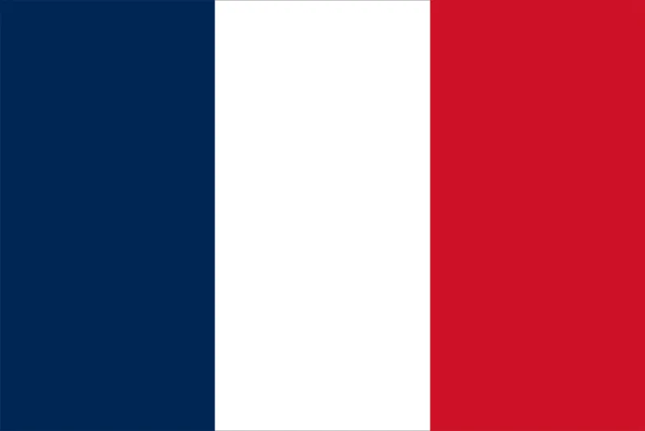
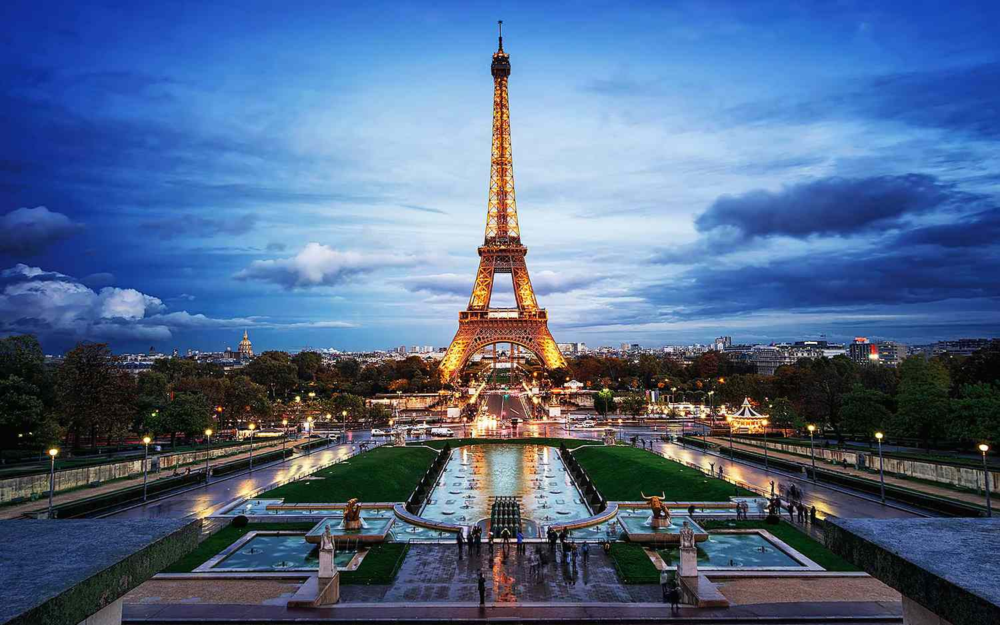
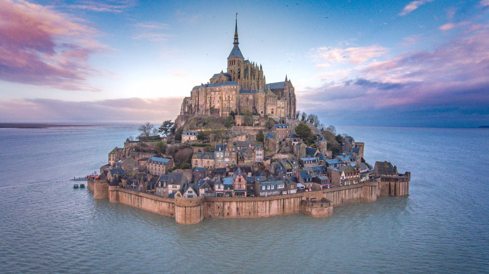
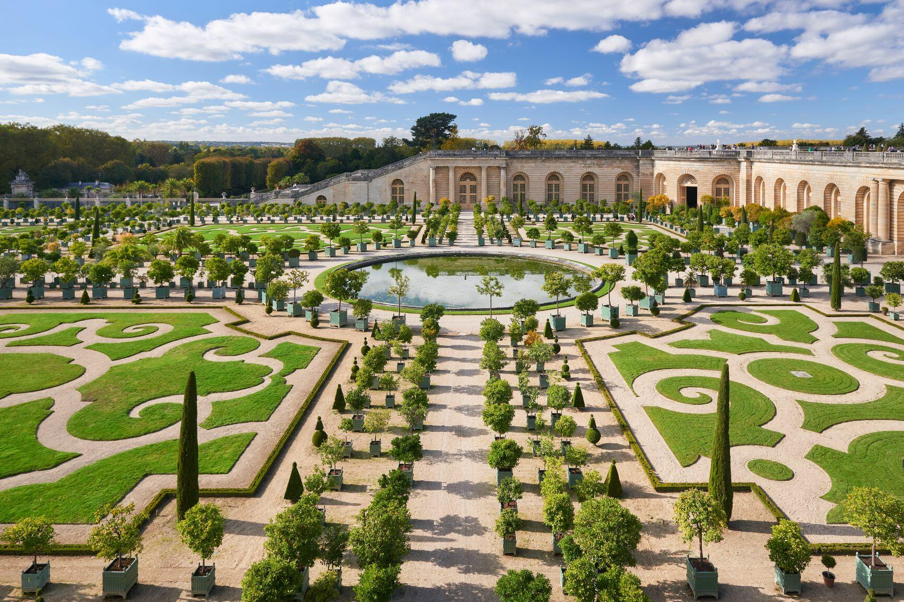
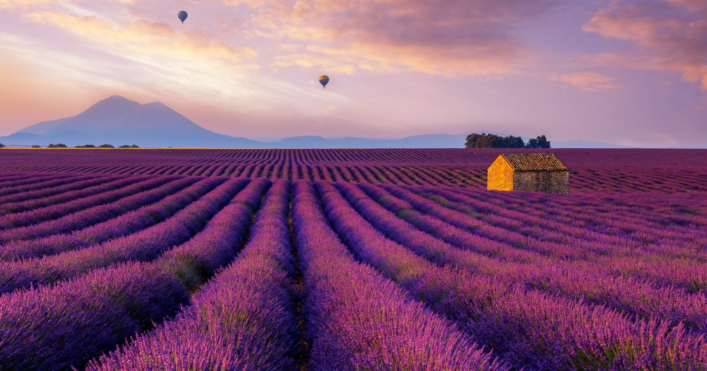
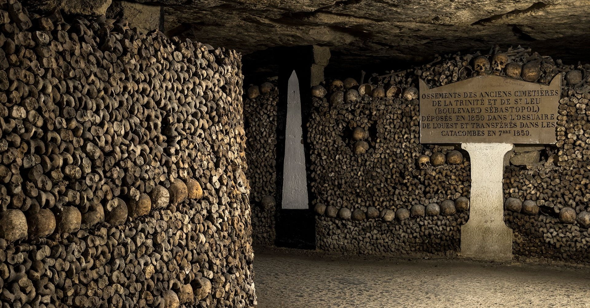
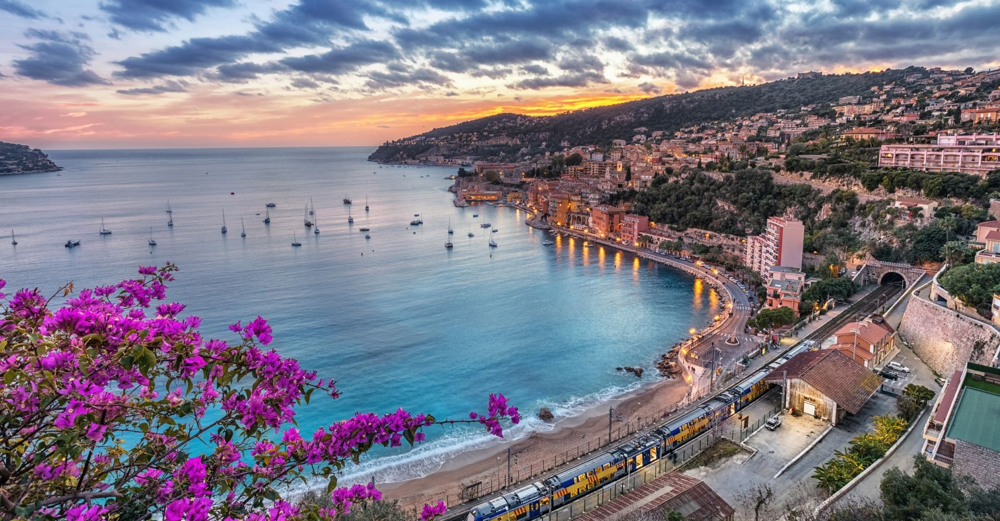

Franța este o republică constituțională unitară având un mod de guvernare semi-prezidențial, mare parte din teritoriul său și din populație fiind situată în Europa de Vest, dar care cuprinde și mai multe regiuni și teritorii răspândite în toată lumea. Deviza națională este „Libertate, egalitate, fraternitate” (în franceză Liberté, Égalité, Fraternité), iar drapelul Franței este format din trei benzi verticale colorate, respectiv în albastru, alb, roșu. Imnul național este La Marseillaise.
Franța joacă un rol important în istoria mondială prin intermediul influenței exercitate de cultura sa, de limba sa și de valorile democratice, seculare și republicane pe care le-a promovat în ultimele două secole.
DATE GENERALE

Denumirea oficiala: Republica Franceză
Fusul orar: UTC+1
Capitala: Paris
Suprafata: 674,843 km2
Moneda: euro
Limba oficiala: franceza
Prefix telefonic international: +33
ATRACTII TURISTICE

Turnul Eiffel este o construcție faimoasă pe schelet de oțel din Paris ce măsoară 324 m înălțime. Turnul a devenit simbolul Franței cel mai răspândit la nivel mondial.
Turnul are 300 m înălțime, excluzând antena din vârf, ce mai adaugă 20 de metri, și o greutate de peste 10.000 de tone. Când a fost construit era cea mai înaltă clădire din lume. Întreținerea turnului include utilizarea a 50 de tone de vopsea maro închis, la fiecare 7 ani. Depinzând de temperatura aerului, Turnul Eiffel își schimbă înălțimea cu câțiva centimetri datorită contracției și dilatării aliajului de metale.

Le Mont-Saint-Michel este o stâncă granitică (78 m înălțime) în Golful Saint-Malo din Marea Mânecii, unde se manifestă cel mai reprezentativ fenomen de flux și reflux: în timpul fluxului este insulă, comunicația cu teritoriul continental fiind întreruptă, iar în timpul refluxului devine peninsulă, o limbă de nisip ieșind de sub ape. Stânca este ocupată de un sat (41 locuitori) și o mănăstire fortificată (ridicată începând cu secolul al VIII-lea, până prin secolele al XII-lea - al XIV-lea). A jucat un rol important în istoria Franței, fiind singurul loc care nu a putut fi cucerit de armatele engleze în timpul „Războiului de 100 de ani”.

Palatul Versailles este un castel regal construit la Versailles, în Franța. A fost reședința regilor Franței : Ludovic al XIV-lea , Ludovic al XV-lea și Ludovic al XVI-lea. Acest castel se înscrie printre cele mai remarcabile monumente din Franța, nu numai prin frumusețe, ci și prin prisma evenimentelor. Acesta devine reședință regală permanentă începând cu anul 1682, când regele Ludovic al XIV-lea a mutat curtea de la Paris, până în 1789, când familia regală a fost forțată să se întoarcă în capitală, cu excepția a câțiva ani din timpul Regenței.

Provence

Catacombele Parisului

Coasta de Azur
TRAVEL TIPS
Paris Pass este un pachet multipass cu 75+ atractii turistice!
E mai facil sa folosesti sistemul de transport public.
 FRANTA
FRANTA